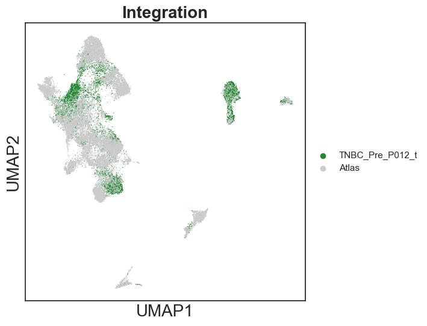
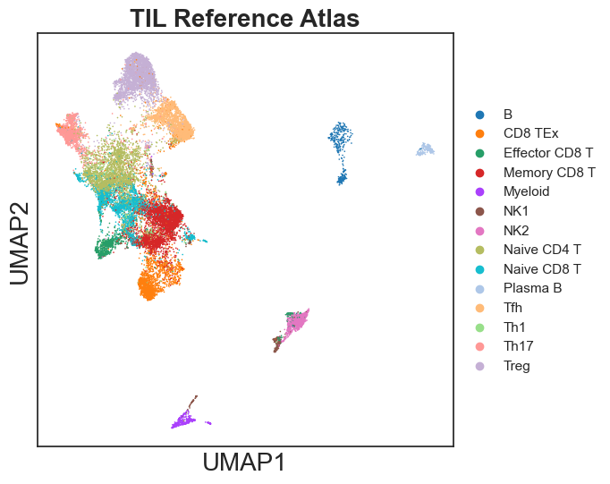
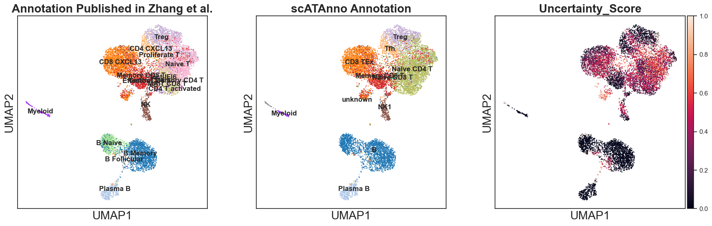
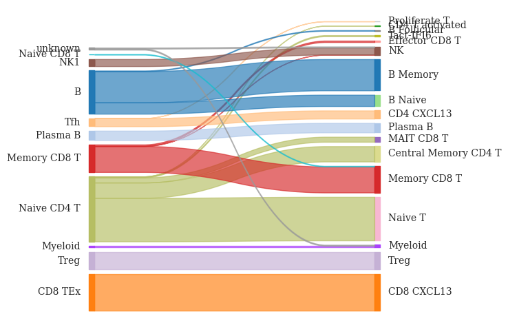

[6]:
import scanpy as sc
import pandas as pd
from scipy.sparse import csr_matrix
from scipy import sparse
import scipy.io
import os
import anndata as ad # Anndata version must > 0.8
import numpy as np
import matplotlib.pyplot as plt
import seaborn as sns
sns.set_theme(style='white')
from scATAnno.SnapATAC2_spectral import *
from scATAnno.SnapATAC2_tools import *
from scATAnno.SnapATAC2_utils import *
from scATAnno import scATAnno_preprocess
from scATAnno import scATAnno_assignment
from scATAnno import scATAnno_integration
from scATAnno import scATAnno_plotting
import warnings
warnings.simplefilter(action='ignore', category=FutureWarning)
warnings.simplefilter(action='ignore', category=DeprecationWarning)
default_28 = scATAnno_plotting.get_palettes("default28")
default_102 = scATAnno_plotting.get_palettes("default102")
TNBC sample
[8]:
os.chdir("/Users/jiang/Dropbox (Partners HealthCare)/Software/ATAC_Annotation_V3/ATAC_Annotation_Package")
output_name = "TNBC"
out_dir = os.path.join("case_study", output_name) ### change
[3]:
reference_data_path = "data/Reference/BCC_TIL_reference_atlas_final.h5ad"
reference_data = scATAnno_preprocess.load_reference_data(reference_data_path)
query_data = scATAnno_preprocess.import_query_data(path = 'data/TNBC_Pre_P012_t/',
mtx_file = 'matrix.mtx.gz',
cells_file = 'barcodes.tsv.gz',
features_file = 'features.tsv.gz',
variable_prefix = "TNBC_Pre_P012_t",
celltype_col = "celltypes",
add_metrics=False)
[4]:
print(reference_data)
print(query_data)
assert reference_data.var.shape[0] == query_data.var.shape[0]
AnnData object with n_obs × n_vars = 22008 × 344492
obs: 'celltypes', 'tissue', 'dataset'
var: 'selected'
uns: 'Group_colors', 'celltypes_colors', 'spectral_eigenvalue', 'true_label_colors'
obsm: 'X_spectral', 'X_umap'
View of AnnData object with n_obs × n_vars = 9935 × 344492
obs: 'celltypes', 'tissue', 'dataset'
[5]:
# Integrate reference and query data
integrated_adata = scATAnno_assignment.scATAnno_integrate(reference_data, query_data, variable_prefix = "TNBC_Pre_P012_t", sample_size = 25000)
/Users/jiang/Dropbox (Partners HealthCare)/Software/ATAC_Annotation_V3/ATAC_Annotation_Package/scATAnno/SnapATAC2_spectral.py:159: ImplicitModificationWarning: Trying to modify attribute `.var` of view, initializing view as actual.
adata.var["selected"] = selected_features
Compute similarity matrix
Normalization
Perform decomposition
Perform Nystrom extension
100%|████████████████████████████████████████████| 2/2 [04:20<00:00, 130.26s/it]
[6]:
# Apply harmony to remove batch effects
integrated_adata_harmony = scATAnno_assignment.scATAnno_harmony(integrated_adata, batch_col = "dataset")
2023-05-25 17:42:14,786 - harmonypy - INFO - Iteration 1 of 20
2023-05-25 17:42:21,018 - harmonypy - INFO - Iteration 2 of 20
2023-05-25 17:42:26,180 - harmonypy - INFO - Converged after 2 iterations
[7]:
# Plot UMAP using spectral embeddings
integrated_adata = scATAnno_assignment.scATAnno_umap(integrated_adata_harmony, out_dir, use_rep = "X_spectral_harmony", save = True)
integrated_adata
[7]:
AnnData object with n_obs × n_vars = 31943 × 344492
obs: 'celltypes', 'tissue', 'dataset'
obsm: 'X_spectral', 'X_spectral_harmony', 'X_umap'
[8]:
scATAnno_plotting.defaultPlotting_umap()
sc.pl.umap(integrated_adata, color="dataset", palette = ['#228833', '#cccccc'], show=True, title = "Integration")
/opt/anaconda3/lib/python3.9/site-packages/scanpy/plotting/_tools/scatterplots.py:392: UserWarning: No data for colormapping provided via 'c'. Parameters 'cmap' will be ignored
cax = scatter(

[17]:
integrated_adata = sc.read_h5ad(os.path.join(out_dir, "1.Merged_query_reference.h5ad"))
integrated_adata = scATAnno_preprocess.add_variable(os.path.join(out_dir,"X_spectral_harmony.csv"), integrated_adata)
[18]:
reference = integrated_adata[integrated_adata.obs['dataset'] == "Atlas",:].copy()
reference.obs["celltypes"] = scATAnno_assignment.curate_celltype_names(reference.obs["celltypes"], atlas = "TIL")
[11]:
import pickle
with open(os.path.join(out_dir, 'TIL_reference_palette.pickle'), 'rb') as handle:
celltype_palette = pickle.load(handle)
scATAnno_plotting.defaultPlotting_umap()
sc.pl.umap(reference, color="celltypes", palette = celltype_palette, title = "TIL Reference Atlas")
/opt/anaconda3/lib/python3.9/site-packages/scanpy/plotting/_tools/scatterplots.py:392: UserWarning: No data for colormapping provided via 'c'. Parameters 'cmap' will be ignored
cax = scatter(

[19]:
query = integrated_adata[integrated_adata.obs['dataset'] != "Atlas",:].copy()
[20]:
projecton = pd.read_csv(os.path.join("data/TNBC_Pre_P012_t/", "query_metadata.csv"), index_col=0)
query.obs = pd.merge(query.obs, projecton, left_index=True, right_index=True)
We first assign cell types based on KNN and compute KNN-based uncertainty score
[21]:
# Perform KNN assignment
reference_label_col = "celltypes"
use_rep = "X_spectral_harmony"
query_KNN = scATAnno_assignment.scATAnno_KNN_assign(reference, query, reference_label_col=reference_label_col, low_dim_col=use_rep)
Because we are annotating TIL subtypes, we adopt more loose threshold cutoffs to annotate query cells. Query cells are assigned high weighted distance-based uncertainty score if their distances to the assigned reference cell type centroid are greater than 95 percentile. Query cells with uncertainty score greater than 0.5 are annotated as unknown.
[22]:
# Perform weighted-distance based assignment
distance_threshold = 95
uncertainty_threshold = 0.5
atlas = "TIL"
query_distance = scATAnno_assignment.scATAnno_distance_assign(reference, query_KNN, reference_label_col=reference_label_col, distance_threshold=distance_threshold, atlas=atlas, uncertainty_threshold=uncertainty_threshold, use_rep = use_rep)
Finally, we perform cluster-level assignment of query cells.
[23]:
query_annotated = scATAnno_assignment.scATAnno_cluster_assign(query_distance, use_rep=use_rep, cluster_col = "Clusters")
[24]:
import pickle
with open(os.path.join(out_dir, 'all_palette_dictionary.pkl'), 'rb') as handle:
annotation_palette = pickle.load(handle)
sc.pl.umap(query_annotated, color = ["paper_annotation_curated", "cluster_annotation", 'Uncertainty_Score'], palette=annotation_palette,title = ["Annotation Published in Zhang et al.","scATAnno Annotation"], legend_loc = "on data")
WARNING: The title list is shorter than the number of panels. Using 'color' value instead for some plots.
/opt/anaconda3/lib/python3.9/site-packages/scanpy/plotting/_tools/scatterplots.py:392: UserWarning: No data for colormapping provided via 'c'. Parameters 'cmap' will be ignored
cax = scatter(
/opt/anaconda3/lib/python3.9/site-packages/scanpy/plotting/_tools/scatterplots.py:392: UserWarning: No data for colormapping provided via 'c'. Parameters 'cmap' will be ignored
cax = scatter(

Compare the annotation results between scATAnno and original publication.
[25]:
from pySankey.sankey import sankey
pred_col = 'cluster_annotation'
true_col = 'paper_annotation_curated'
sankey(
query_annotated.obs[pred_col], query_annotated.obs[true_col], aspect=10, colorDict=annotation_palette,
fontsize=10, figure_name=None
)
# plt.gcf().set_size_inches(6, 10)
# plt.savefig(os.path.join(out_dir,"{}.png".format("Sankey_CellType_Annotation_paper_cluster")), bbox_inches='tight', dpi=300)
